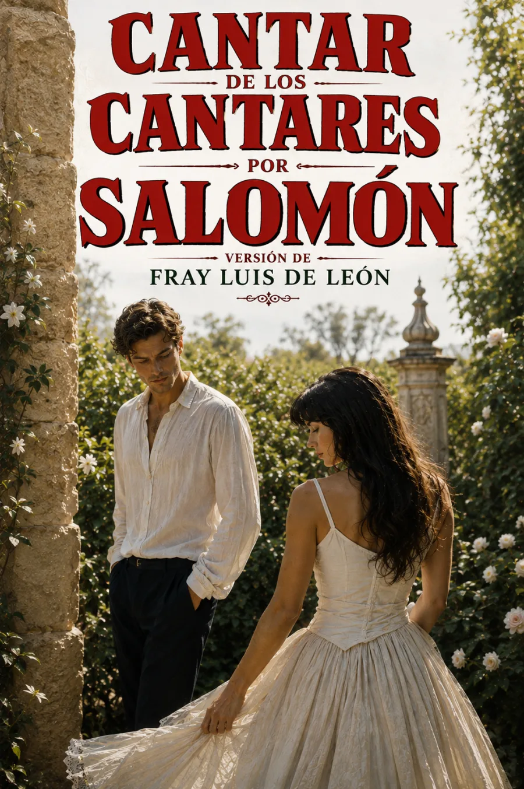

SINOPSIS
Voces que se buscan, jardines, perfumes y cuerpos: el Cantar de los cantares despliega el deseo en un lenguaje de imágenes y llamadas. La versión castellana de Fray Luis de León acerca al lector esa intensidad verbal y la acompaña de una explicación atenta a las palabras y comparaciones del texto.
El diálogo amoroso admite una lectura literal y una larga tradición de interpretaciones espirituales. Escucharlo exige conservar esa tensión, sin borrar su sensualidad ni reducirlo a una sola alegoría. Fray Luis interviene como traductor y comentarista de un libro bíblico tradicionalmente vinculado a Salomón; no es su autor original.
Edición histórica de consulta: Traducción literal y declaración del libro de los cantares de Salomón, Salamanca, 1798, conservada en reproducción digital por la Biblioteca Virtual Miguel de Cervantes.
CAPÍTULOS
Capítulo I
Capítulo II
Capítulo III
Capítulo IV
Capítulo V
Capítulo VI
Capítulo VII
Capítulo VIII
RESEÑAS

Excelente